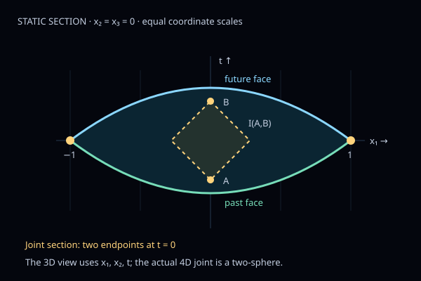

How can a signed count of causal relationships recover a geometric joint? Follow the mechanism, its hypotheses, and the shortcuts that fail.
Source assessment: · main revision 8b05befffd4a. This is a dated guide, not a live status feed.
The destination is a limit of expectations. The flat 4D results below are Lean-checked under restricted geometric hypotheses. They do not prove the general conjecture or convergence of individual sprinkled causal sets. The research remains unpublished and awaits independent human mathematical/physical review.
01 · What is being asked?
From order and number to geometry
A Poisson sprinkling puts random events into a fixed spacetime region. Retain their causal order and count how many events lie between each related pair. Conjecture 1′ asks whether the mean unsmeared BDG action, as the density increases, approaches a local curvature term plus an angle-weighted joint term.
The question mark is intentional. This is the Planck-normalized form of Dowker–Liu–Lloyd-Jones, equation (11), not a general theorem of this repository. In 2D the normalization is simply \(S^{(2)}/\hbar\). In flat space \(R=0\); the proof spine here concerns the joint term.
Why it matters: this is a controlled consistency test of a discrete action on causal sets already obtained from a continuum geometry. Recovering that geometry's action is not the same as deriving spacetime or gravity from unconstrained microscopic dynamics.
Precise scope: the published conjecture versus a research contract
The paper frames Conjecture 1′ for globally hyperbolic manifolds, modifying the joint weight for two spacelike boundaries. Its isolated regime counts intermediate elements inside the region; an embedded calculation can count elements outside it. Those regimes agree here only because ambient causal convexity is proved.
The repository's G-SS candidate makes one intended core precise: every integer \(d\ge2\), a smooth time-oriented globally hyperbolic ambient Lorentzian manifold, a precompact open ambient-causally-convex region, and exactly two compact smooth achronal spacelike faces with common transverse codimension-two joint and no extra strata. It permits disconnected components and interior critical points. This candidate is unproved. It is not a restatement claiming that the paper supplies all these hypotheses.
Here \(dA_g\) is the area of the induced Riemannian metric \(-g|_{TJ}\), with signature \((+,-,\ldots,-)\). For two spacelike faces use future unit timelike normals \(n_-,n_+\), \(g(n_-,n_+)=\cosh\theta>1\), and the positive rapidity branch. The curvature sign must also be fixed: the contract's convention gives \(R=6\Omega^{-3}\Box_\eta\Omega\) for \(g=\Omega^2\eta\) in 4D.
Null faces have no unit timelike normal. Their joints, tips, caustics, and extra corners require separate contracts—not substitution into this formula. Conjecture 2 concerns timelike boundaries and a different density scaling; it is separate context, not a step in this proof.
02 · A concrete object to keep in mind
A steep, symmetric capsule
Take three spatial coordinates \(x\in\mathbb R^3\), \(r=|x|\), and \(s=3/4\). The past and future faces close up on a unit sphere at time zero:
The raw height is \(h=s(1-r^2)\); the future graph is \(f=h/2\). Each face's maximum slope is \(s\lt1\), so both are spacelike. The thickness slope reaches \(2s=3/2\): a planar cap with the same height would not satisfy the old strict cap bound. This is a genuine member of the larger checked class E, not permission to use that invalid comparison.
Illustration · not proof evidence
One scene, four guided views
Slice x₃ = 0 · two space + one time

time t ↑ · x₁, x₂ spatial blue: future face · green: past face gold: joint
Static section shown. Interactive 3D loads when available.
The two spacelike faces meet along a circle in this slice. The actual 4D joint is a two-sphere, not this circle.
A and B: v = 0.560, σ = 0.313600. At δ = 0.400 this pair is long.
Drag to rotate; pinch or scroll to zoom. Buttons provide non-drag views. No auto-rotation. The 3D display is the exact x₃ = 0 slice of a 3+1-dimensional region, not a picture of all four coordinates. Its joint circle and intervals are slices of the 4D objects; do not use their areas/volumes as 4D measures. The front view projects along x₂ (the joint circle then looks like a line). Blue cone scaffolding may extend outside M; the gold interval stays inside M by causal convexity.
Sampling boundary: 56 seeded pseudorandom points illustrate uniform locations in this 2+1-dimensional slice, conditional on a fixed count (the conditional Poisson spatial law). They are not a 4D sprinkling or a simulated BDG action. A and B are marked explanatory endpoints, not extra sampled events. Relation lines use the full slice Minkowski inequality; rotating the camera does not change causality. The adjustable cutoff teaches the definition, not a certified local Taylor radius.
Static fallback and controls without WebGL
Blue and green arcs are the future and past faces. Gold endpoints are a section of the joint. Dashed 45° lines bound the causal interval. The pair selector and cutoff readout work without WebGL when JavaScript is available; this section and the narrative remain when JavaScript or the CDN is unavailable.
Check the example's geometry and independent target
At the joint the two opposite face slopes have magnitude \(s\). Their future unit normals give \(\cosh\theta=(1+s^2)/(1-s^2)\), hence \(\theta=2\,\mathrm{artanh}(s)\) and \(\coth\theta=(1+s^2)/(2s)=25/24\). The joint lies at constant time, so its induced area is the ordinary sphere area \(4\pi\). Thus the independently computed target is \(25\pi/6\), approximately 13.08997.
The clipped envelopes \(\pm(s/2)(1-r^2)_+\) each have global Lipschitz constant \(s\lt1\). They coincide outside the ball; inside they agree with the raw faces. The origin is an allowed positive-height critical point. None of these facts uses an action limit.
Finite order action + Poisson law ↓ exact expectation bridge
Geometric admissibility ↓ actual overlap
Normals + induced area ↓ independent target
Bridge held separately
One fixed δ short → target · long → 0
Target identification ← divergence + signed response
Short + long → full deterministic limit Full limit + exact bridge → expectation limit
These are logical roles, not a graph of every Lean lemma. A finite-density bridge cannot fill an open asymptotic estimate.
04 · The flat 4D proof spine
Seven steps, with the difficult parts left in
Expand the source notes for the technical layer. On narrow screens, longer equations can be scrolled horizontally.
Shared geometric hypotheses for steps 4–7: exactly class E. Let \(\Omega=\{h>0\}\subset\mathbb R^3\) be bounded. Raw \(h,f\) are C³ near \(\overline\Omega\); \(h=0\) on its frontier and \(dh\ne0\) at zero height in its closure. There are global lower/upper envelopes, each Lipschitz with its own constant strictly below one, whose difference is \(h_+\), and whose upper envelope agrees with \(f\) on \(\overline\Omega\). Interior critical points and empty geometry are permitted. No sum-of-slopes bound or analytic conclusion is an admissibility field. Exact encoded contract.
1
The discrete signed action
Lean-checked result
Count intervals, but give different sizes opposing signs.
For a finite causal order \(C\), let \(N=\#C\) and \(L_k\) count ordered distinct related endpoint pairs with exactly \(k\) strictly intermediate elements. At \(\rho>0\), the normalized unsmeared 4D action is
Why needed: this defines the random observable before any continuum integral or proposed answer. The signs are the cancellation mechanism, not a plotting choice. Explore the event-and-interval view ↑
Example, delicate point, and source
In a three-event chain A ≺ C ≺ B, the two adjacent pairs contribute to \(L_0=2\), the outer pair to \(L_1=1\), and \(N=3\). The bracket is \(3-2+9=10\). It is not a joint-area measurement for one tiny realization.
Failed shortcut: counting unordered pairs, counting endpoints as intermediate elements, or keeping only links changes the observable. Layers with more than three intermediate points have zero weight in this minimal 4D action, but are still part of the order.
Average a genuinely random count—not an integral renamed “expectation.”
Construct the finite Poisson law of intensity \(\rho\,d^4x|_M\) independently. For a measurable finite-volume region at positive density, with every closed ambient causal interval between its points contained in \(M\),
Why needed: the rest of the spine studies a deterministic integral. This exact identity—not an approximation as density grows—is what later transfers its limit to the discrete mean.
How averaging creates the kernel
A marked pair with interval volume \(V\) has Poisson mean \(u=\rho V\) for its intermediate count. Weighting its probabilities by \(1,-9,16,-8\) produces \(K(u)=(1-9u+8u^2-4u^3/3)e^{-u}\). Two-point Mecke contributes \(\rho^2\); the discrete factor \(\rho^{-1/2}\) leaves the pair normalization \(\rho^{3/2}\).
Example: the capsule's independently strict envelopes imply ambient interval containment, so the bridge applies. For a nonconvex region the rate is the volume of the interval intersected with M, not automatically the full flat interval volume.
Delicate point: simplicity, marked-endpoint removal, measurability, and finite first/second moments are proved. Intrinsic global hyperbolicity is not a replacement for ambient causal convexity. A mean identity gives no variance or sample-wise limit.
Write the displacement as \(z=(s,b)\), \(r=|b|\), \(\sigma=s^2-r^2\) (squared proper time, so \(\sigma^2\) is its square). Put \(V_M(z)=\int_M\mathbf1_M(x+z)\,dx=\mathrm{Vol}_4(M\cap(M-z))\). The pair integral equals \(\int_{J^+(0)}K(c\rho\sigma^2)V_M(z)\,dz\).
Why needed: geometry now enters through the actual overlap, with all possible future partners retained. The flat timelike interval has 4-volume \(c\sigma^2\); using it in the expectation additionally requires step 2's containment hypothesis. Explore the causal-interval view ↑
Example, delicate point, and source
For a vertical capsule displacement \((s,0)\), \(V_M(s,0)=\int_{|x|\lt1}[s_0(1-|x|^2)-s]_+\,d^3x\), where \(s_0=3/4\). For nonvertical displacements one intersects the two actual vertical time intervals, not just their heights.
Failed shortcut: small proper time does not mean nearby coordinates. The lab's nearly-null pair has \(v=0.595\), but \(\sigma=0.002975\). As density grows, long partners close to the cone can still have a small kernel argument. Cutting them away before integrating is unjustified.
Inside the future cone \(s\ge r\), put \(v=s+r\). Choose \(\delta>0\) once from the geometry, before varying density. Short has \(v\lt\delta\); long has \(v\ge\delta\), including equality. For bounded measurable regions the exact decomposition is
Both integrals are over future-causal displacements and use the same \(K(c\rho\sigma^2)\). Why needed: short and long estimates must be pieces of the same action. The point-volume term is assigned to short exactly once. Explore the cutoff view ↑
Example, delicate point, and source
At \(\delta=0.4\) the small lab pair is short (\(v=0.17\)); the nearly-null pair is long (\(v=0.595\)). At \(\delta=0.595\) that second pair remains long by the equality convention. Moving the slider compares different fixed decompositions, not a cutoff varying with density.
Failed shortcut: replace \(v\) by \(\sqrt\sigma\), let \(\delta\) shrink with \(\rho\) without a uniform theorem, or partition into isolated patch actions. Pair actions are bilocal: cross-patch partners cannot be discarded. Absolute integrability at each finite density is established before signed splitting.
Why needed: this both controls the actual short-sector error and identifies its coefficient with independently constructed normals and induced area—not a target defined by the overlap calculation.
The two-jet, divergence, and the trap in a planar comparison
First prove raw-germ/envelope agreement on the relevant neighborhood; the clipped envelopes need not be differentiable at the joint. A finite regular-height collar gives a local C³ extension of the future-cone overlap. The complete two-jet contains the constant volume, time-linear slice, future Hessian, and joint quadratic square. Derivative-controlled cubic remainder bounds, not just a value bound, control nearly-null errors.
The constant radial response cancels the point term, the linear response cancels, and both quadratic modes are retained. Spatial divergence converts the future-Hessian contribution into a boundary flux. If \(p=\nabla f\), \(g=\nabla h\), and \(S=\partial\Omega\), the resulting coefficient is
Independently the joint's Lorentzian Gram density is \(j_L=\sqrt{1-|p_{\mathrm{tan}}|^2}\); the positive normal-angle identity is \(\coth\theta\,j_L=(1-|p|^2+p\cdot g)/|g|\). Canonical spatial surface measure is normalized Hausdorff area (the pinned Lean convention uses \(\pi/4\) times its raw 2-Hausdorff measure); induced spacetime area uses \(j_L\), not the ambient Euclidean graph factor.
Example: for the capsule, \(p=-sx\), \(g=-2sx\) on the sphere, giving \((1+s^2)/(2s)=25/24\). The predicted joint integral is \(25\pi/6\), without a planar action comparison.
Failed shortcuts: drop the future Hessian, use coarea through interior critical points, or invoke a same-height planar theorem on the steep capsule. The older written weighted route also has generally nonzero artificial partition-derivative terms, which cancel only in the complete sum. The class-E checked route uses the complete unweighted overlap and divergence, not isolated patch limits.
Long pairs disappear by cancellation, not because they are individually negligible.
For exactly class E and every fixed \(\delta>0\), the actual normalized signed long contribution satisfies \(L_{\rho,\delta}\to0\). This is not absolute decay of the original pair term.
Finite plot of the exact kernel formula · illustrative, not certified quadrature or convergence evidence. Blue lobes are positive; coral lobes negative. No animation or sample establishes the asymptotic theorem.What cancels, and why contact geometry cannot be skipped
Disintegrate the actual long overlap by squared proper time \(\sigma\). After controlling moving contacts and averaging the fibres, its right density has an integrable quadratic jet with a controlled remainder. With \(w=\sqrt{c\rho}\,\sigma\), the exact transverse moments are
Why needed: the three zero moments cancel the quadratic density before a bound is applied to the remainder, with the full \(\rho^{3/2}\) normalization. The nonzero third moment is a useful check: the kernel does not annihilate everything.
Example: the lab's nearly-null pair has a small 4D interval-volume parameter despite macroscopic coordinate reach. Long fibres can touch the cutoff; strictly active roots retain a moving-contact coefficient, while exact/nonactive contacts have their own right-fibre regimes.
Failed shortcut: replace \(K\) by \(|K|\), discard contact sets as “measure zero,” or infer a uniform fibre little-o from pointwise expansions. Independent endpoint margins keep old-active endpoints even when perturbation closes their gap. Measurable coefficients, three-probe integrability, and finite-support domination are proved before dominated averaging.
Use both producers at the same cutoff; only then return to probability.
For exactly class E choose one \(0\lt\delta\le\delta_0\) from step 5. Step 6 accepts this same cutoff. The exact identity gives \(\mathcal A_\rho=S_{\rho,\delta}+L_{\rho,\delta}\to T(h,f)\). The positive-density bridge then gives
\[\lim_{\rho\to\infty}\mathbb E A^{\mathrm{disc}}_\rho=\int_J\coth\theta\,dA_L.\]
Why needed: separate short/long statements or a finite-density probability identity are not a full theorem until their regions, kernels, targets, normalizations, and cutoff quantifiers match.
Exact declarations, calibration, and what this does not say
Both declarations take the geometric class-E hypothesis, not an assumed overlap estimate or limit. The original smaller-class goals remain separately available.
Example: the capsule's complete mean tends to \(25\pi/6\). Independent finite-density quadrature regressions give about 10.29387, 11.85813, and 12.58388 at densities 100, 1,000, and 10,000. These are numerical diagnostics, not an error certificate or proof; at finite density long cannot simply be deleted.
Failed shortcut: no extra limit \(\delta\to0\) is required, and none is silently interchanged with \(\rho\to\infty\). A correct expected value does not imply concentration around it. There is no claimed convergence rate, variance bound, convergence in probability, or almost-sure convergence.
Conventional written proof Source argument; not necessarily human-reviewed or formalized.
Lean-checked result Encoded statement with repository audit evidence; not validation of unencoded physics.
Symbolic / numerical evidence Regressions or finite calculations; not asymptotic proof.
Conditional result A theorem with analytic premises that still need a producer in a new application.
Open obligation A proposed contract or missing estimate, not a theorem.
Flat results already proved in the sources
Lean-checked · restricted 4D
Class E gives unconditional deterministic and expected limits for compact-closure global two-graph regions with independent strict envelopes. The older combined-budget two-face class, admissible planar-future graph caps, unequal-axis ellipsoids, and a concrete null-plane-truncated diamond retain their own checked declarations and hypotheses.
The null cap has exactly \(0\lt a\lt T\) and target \(\pi a(2T-a)\); it is not obtained by degenerating the spacelike angle. A separate fixed-null mixed family has a conventional written global/expected proof, not a new Lean mixed-region theorem.
Still not established: arbitrary flat non-two-graph atlases, all null/mixed boundaries or extra strata, noncompact tails, small-angle uniformity, or sample-wise convergence. “Established” in this guide means present proof evidence under the stated scope, not independent peer-review acceptance.
Dimensional extensions
Lean-checked prerequisitesWritten pilot analysis
In integer dimensions \(d\ge2\), signed kernels/moments, flat interval volume and covariance, a fixed-regulator local coefficient, and the genuine finite-order Poisson expectation bridge are checked. They are prerequisites, not a general-dimensional two-face limit.
The smooth 2+1-dimensional SmoothPilot3 has separate written short and long analyses, with changed radial measures and fractional responses. Written 5D/6D long transfer uses a separately specified C⁴ class and regular fixed cutoff. These are not automatic instances of the 4D proof. Canonical geometric/formal integration and compatible global assembly remain separate obligations.
The controlled conformal pilot has a checked curved finite-volume Poisson law and exact finite-density identity using the actual restricted curved interval volume. Conformal cones stay the same, but interval volume does not; the flat \(c\sigma^2\) formula cannot be reused.
For the fixed 4D pilot \(g=\Omega(t)^2\eta\), \(\Omega=(1+t^2)^{1/4}\), the current written work proves contact-averaged fixed-cutoff long cancellation on the original two-face class, and the actual short remainder on compact interior source supports. With a smooth interior source weight \(\chi\), and compatible small fixed cutoff whose closed short cones stay inside the region, the supported constant-field response is \(\tfrac12\int_M\chi R\,d\mu_g\). Nonconstant partner fields retain their wave-operator terms.
The boundary short collar is still present. Small collar volume does not imply small signed action. Its curvature, face, joint, and partition terms must be accounted for before a complete curved deterministic or expected theorem. Raw first-endpoint long fibres lacked an integrable density-uniform dominator; averaging contacts first repairs that route, not the remaining collar theorem.
Conditional backends are useful, but not missing geometry in disguise
Conditional resultAbsoluteShortModel.action_limit_of_remainder transfers specified polynomial coefficients and derivative-controlled remainder bounds into a short limit. It is checked as an analytic implication. Class E supplies those premises through actual geometric producers; a new dimension or metric must supply its own compatible inputs. A contract naming a desired remainder or coefficient is not proof that it exists.
Three different kinds of scrutiny. Written arguments, automated/AI review, and Lean verification provide different evidence. Independent human mathematical/physical review remains outstanding in the current sources. Closed issues, merged PRs, browser animations, and green CI do not themselves prove a research claim. No novelty or general physical-applicability claim is made here.
06 · Vocabulary and a route into the sources
Read to explain—and to challenge
Glossary
Causal set
A locally finite partial order: events and precedence, with finitely many intervening events in each order interval.
Sprinkling / density ρ
Poisson events with mean count ρ times spacetime volume; counts in disjoint sets are independent. Fixed-N illustrations show only the conditional location law.
Face / joint
Past or future boundary hypersurface / their codimension-two intersection. A same-side seam is not automatically such a joint.
Causal interval I(A,B)
The causal future of A intersected with the causal past of B. Strictly intermediate sampled elements exclude A and B.
Link / layer Lₖ
A link has no intermediate element; Lₖ counts ordered distinct causal pairs with exactly k intermediate elements.
Causal convexity
Every entire closed ambient interval between endpoints in M stays in M, including null segments.
Overlap / covariogram
The volume of locations for a source and its translated partner both to lie in M.
σ / v / δ
σ = (Δt)² − |Δx|² is squared proper time; v = Δt + |Δx| is coordinate reach; δ is a fixed short/long threshold for v.
Signed kernel / moment
A weight taking both signs / its integral against a power. Exact zero moments erase polynomial terms, not the whole kernel.
Jet / moving contact
A local Taylor polynomial with remainder control / a boundary root that moves as the proper-time parameter varies and contributes endpoint derivatives.
Rapidity θ / induced area
The positive hyperbolic angle between future unit normals / area measured by the joint's own spacelike metric, not the surrounding Euclidean display.
Expectation limit / sample-wise limit
A deterministic limit of ensemble averages / convergence of random realizations under an explicitly stated probabilistic mode. The first does not imply the second.
Orient yourself. Use the scene and Dimensions, then read DLL §2 for action, regimes, and Conjecture 1′.
Compare proof presentations.The older written weighted assembly explains artificial derivative terms; it is not the same route as the larger class-E direct-origin proof.
Look for the missing coverage. Read the general scope contract and literature audit. Follow the dimensional and curved branches only with their own hypotheses.
Questions to practice defending the argument
Where do both factors of density in the pair expectation come from?
Why is a long nearly-null pair not exponentially negligible just because it is far away?
What makes the target independent of the overlap calculation?
Which theorem gives a cutoff before density varies, and which accepts that same cutoff?
Why does a fixed-N slice drawing say nothing about 4D sample-wise convergence?
Which actual boundary term is still unproved in the curved pilot?
All repository research links are pinned to the assessed source revision. To reproduce formal verification rather than infer it from this page, follow the full Lean setup and checker workflow. No Lean source was changed for this guide.